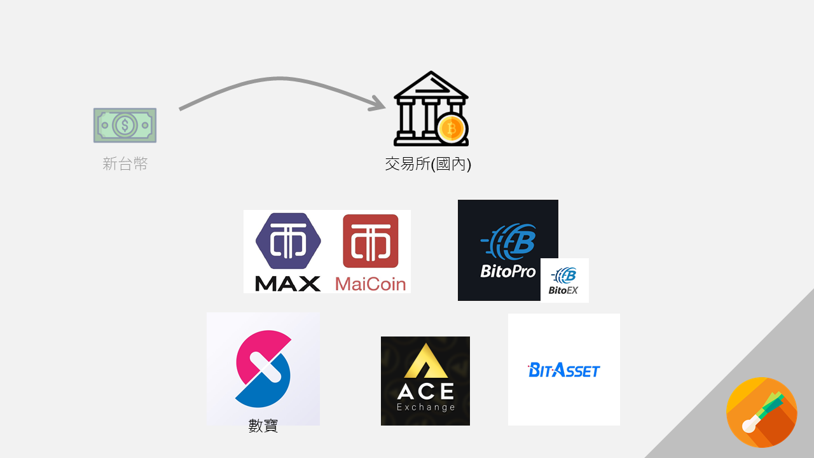
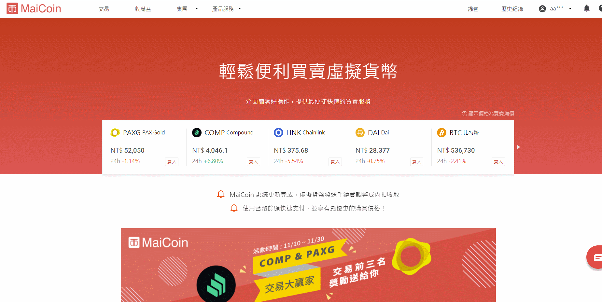
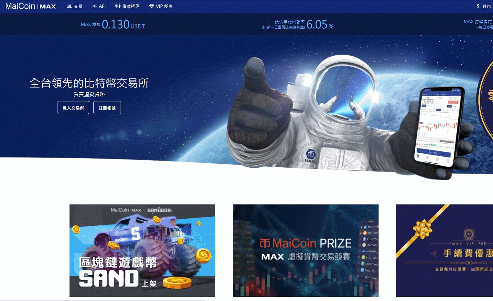
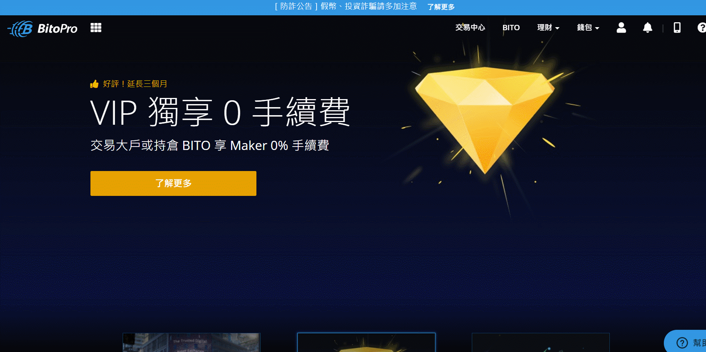
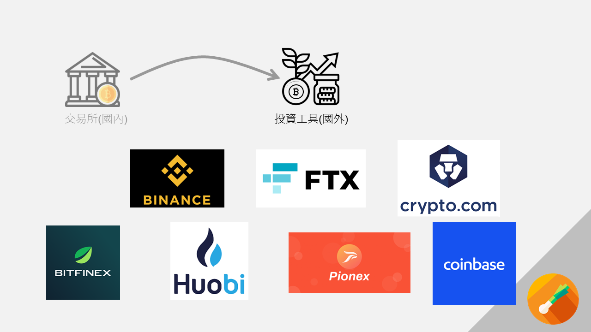

Many people think they lack motivation when what they really lack is clarity.(James Clear, 2018)
很多人認為自己是沒有動力去做某件事，事實上是缺乏對這件事的認知。(James Clear, 2018)
本篇適合人群：想要動手投資加密貨幣對於安全性有疑慮者、看到網路上很多開戶文章都長得很制式覺得是詐騙的人（我自己當初2015年就覺得他們都是騙子，現在想想真是悔不當初…比特幣都100倍了…）
如果你只是來找優惠推薦碼的可以轉往這裡
有多少人想過要學著理財？還是學習英文？健身？管理飲食？但我們往往會在中間遇到各種困難把我們打回原形。有的人可能就會認為自己意志不堅，注定沒辦法完成想要去做的事。但我認為不是的，回想我自己失敗的經驗，為甚麼我沒辦法管理好飲食，並不單單是因為我貪吃（或許也有一部分😤），而是 很多原因組成的－－因為我不會烹飪、因為我不知道怎麼樣把健康的食物做的好吃、因為我不知道哪裡找到便宜健康的食材、因為我不知道如何有效率的準備我的三餐（這導致每次廚房都跟打仗一樣混亂😇）。
其實不難看出，我們做不到一件事情實際上是由一連串的「我不知道」所構成，而當你花時間去找這些問題的解答， 往往你的精力就耗費在這些事情上了。 我在這裡分享我投入真金白銀前所考慮過的問題，讓你不用再多走彎路。如同我在學習地圖中提到的，這裡不是手把手的步驟教學，那種教學網路上已經很多了，這裡希望跟你分享的是我思考的路程、選擇的方法。
第一個問題是：你的新台幣要如何變成比特幣呢？
 如果你看過我的另一篇文章「概念篇」，應該能了解比特幣其實是「一段你擁有所有權的程式碼」。（如果沒看過可能需要先去看看）正常來說你有三個管道可以獲得這個所有權
如果你看過我的另一篇文章「概念篇」，應該能了解比特幣其實是「一段你擁有所有權的程式碼」。（如果沒看過可能需要先去看看）正常來說你有三個管道可以獲得這個所有權
- 挖礦
- 向其他人購買
- 向交易所購買。
但事實上
- 基本不可能，挖礦已經成為一個大型事業了，個體戶要參與到挖礦要用礦池集中算力，再分收益的方式。台灣礦池的話我推薦GPUMINE，另外也有區塊勢訪談。簡單說，你現在去光華買幾片顯示卡回家挖的土法煉鋼已經跟不上時代了。
- 向其他人購買的風險很高（你可能付了錢拿不到貨）。我更擔心的是所謂「有人拉你來買」，我這裡一個靈魂拷問送給你「他們的商業模式到底是買賣加密貨幣、還是拉人頭？」這個我留給你自己解答。😎
- 所以我們只能選擇向交易所購買。
下一個問題是：你要怎麼樣選擇交易所？
可以先記住一件事情，通常你第一個使用的交易所，就會是你最後用的了，你很難再有精力去研究第二家，或是要把錢轉來轉去分散風險等問題。所以我重視的是長期使用的安全性，具體來說我希望符合三個條件
- 有在台灣合法營業
- 不會發生負責人跑路事件
- 業內認可。
在台灣合法營業的你可以找到

- ACE(王牌數位創新股份有限公司)
- BitoPro (和BitoEX同屬英屬維京群島商幣託科技有限公司)
- MAX (和MaiCoin同屬現代財富科技有限公司)
- BitAsset (亞太易安特科技有限公司，總部位於香港，目前唯一LikeCoin轉為新台幣的管道)
- 數寶 (國際交易所火幣提供技術支持，吉富投資集團在台子公司，應為中資)
有關M家和Bito家為甚麼要將交易所拆成兩種曾讓困惑我一陣子，可以參考交易所推薦碼文章。簡單來說Maicoin、BitoEX更適合擔心操作出錯的新手，但是手續費也較高。
如果你想註冊的中文交易所，不是這五個之一，請跳到末尾Bonus地方，辨別是否詐騙🔥
碎碎念一下：要搞出一個詐騙用的APP、金流系統、網頁，成本非常非常低，我只需要1個月的時間，一個android工程師、一個ios工程師，一個HTML工程師，一個行銷。算下來我大概成本20萬就能愉快地開啟詐騙生涯。 另外再多講一個簡單的道理，如果你是被「好朋友」拉來投資加密貨幣。你的這位朋友可能講的都是真心話，真的沒有騙你，但是你的朋友「有沒有被其他人騙」，那又是另一個問題。
(04/22)近日行政院發布法令針對虛擬通貨平台業務做防洗錢，金管會表示八家列管平台要推動實名制。以平台角度看，他們最近皮要繃緊，法遵會很辛苦。換個想法，以我們消費者的角度來看，這八家就是政府認可合法的平台。 新聞連結：動區
不會發生負責人跑路事件
其實合法營業只能避免我正常使用下不會莫名其妙捲入法律問題，如果機構要捲款逃跑我是一點辦法也沒有。所以第二個條件也很重要，但我要怎麼確保呢？我找到了「信託」這個機制。由傳統銀行來幫我保證我的錢是安全的。
信託機制保證的是你存入的TWD，只要你將TWD拿去買其他的加密貨幣（我認為是包括USDT在內的穩定幣），這筆錢就會移出信託帳戶。之後如果你再將幣種換回TWD，候假設交易所出狀況，我其實沒辦法保證這還有沒有在信託範圍內，只能說這在心理上多一層保障，還有當災難發生時你比別人更安全一些，另外也顯示出交易所合法合規的決心。（我差點忘記這段說明，感謝Line群組中的網友「老砲兵」提醒補充。）
業內認可
第三點就比較主觀了，我的想法是他們可能會定期參加一些大型的活動、論壇，或者和其他業者做合作，這可以間接的由其他第三方幫你認證這些機構是玩真的，不是那種賺一波就跑掉的資金盤。你可以找大型活動，我這裡提供台灣幾個近期的活動：
- 區塊鏈應用法律高峰會2020 這裡出現有 BitoPro、MaiCoin、幣安（目前世界交易量第一國際交易所，未在台設子公司，前陣子有些風雨，但是依然站在第一的位子上）
- 2020 Meet Taipei 創新創業嘉年華 這裡出現有 BitoPro
- 2020 金融博覽會 這裡有出現 ACE、BitoPro、MaiCoin、派網Pionex（加密貨幣經紀商，未在台設子公司，交易幣安和火幣的市場，是目前我資產主要配置的地方，主要是因為交易手續費低，但是又低的合理，另外他的投資資本也是中國真正大型VC，所以我目前認為可信） 一樣的道理如果你是要找加密貨幣財富管理、投資商等，也可以利用一樣的方式找到相對可靠的公司。
另外一種方法是看看全世界的人（確切的說是資金）都投到哪裡去，畢竟真金白銀丟下去了，大型資本機構也不是傻子，肯定是研究過了。在國際大型交易所中，有的交易所可能是有很好的防駭機制，或者是替用戶保加密資產的保險， 更有甚者是準備好一筆錢隨時賠給受害者 (這件事還成為了一個謎因 )。老實說，加密貨幣被駭的事情多年來時有所聞，因為中心化的交易所注定會有漏洞可駭，我認為保險、會者理賠基金會是好的選擇。這裡是目前最權威的實時第三方統計網站 其中台灣榜上有名的有MAX Maicoin、BitoPro，交易量介於10,000,000-15,000,000之間(資料時間：2020/12/01)，兩家的TrustScore都是8分，分別為列30、31名（其實11/25的時候MAX Maicoin當時的分數是N/A，應該是這幾天評分的，當時BitoPro的分數為7分，第50名。） 另外也有Mr.Market市場先生 介紹的前二十大交易所，沒意外的話是每年更新。 這些排行榜上大部分都沒有在台灣設子公司，你唯一將真實貨幣存入的管道就是刷Visa、MasterCard等，但是跨國交易等等手續費都很難算，對新手也不太友善，這裡就不討論了。
好，這裡我得先下一個小結：沒有任何一家交易所是絕對安全的。看到這裡你必須按照你自己願意相信的角度選了一家相對安全的交易所，準備要註冊了。
如果要我直接給你結論，我從上述資料中判斷，會選擇Max、BitoPro。
BitAsset和數寶，我能找到的公開資料真的不多。ACE給我的感覺輸了MAX和Bito一些。
咦，註冊之後他要我拍身分證？還有要寫一張字條證明是我註冊？還要我給銀行帳號？？？該不會是詐騙吧？😱
第三個問題：KYC認證
KYC認證(Know your Customer)是金融業行之有年的慣例了，就像你平常去開戶要帶著很多證件、印章一樣，這是為了防制洗錢的必要之舉，防制洗錢金融行動工作組織(FATF)每年都會對於如何防制洗錢提出建議，近幾年也開始有虛擬資產提供商(VASPs)須遵守的相關規範，因此現在各家交易所都會需要KYC。
證件是和字條都是為了證明是由你本人開的帳戶，你提供的這個銀行帳號則是之後將新台幣放進去、取出來的唯一途徑，固定的進出帳戶也方便監管機構檢查錢的流向。
2021年的當下，各國逐漸地拉緊監管力度，如果被列入FATF的不合格名單會遇到不少刁難，因此沒有好好做KYC的交易所會開始很難經營下去。每一家合法交易所都一定會有這個規定。如果一家交易所沒有好好KYC卻能讓你領出新台幣…那我更會很擔心這是不是正規交易所。
鄭重提醒：KYC後請將帳號密碼當作銀行密碼一樣，就算操作很複雜、數字看不懂也不應該借給他人，切記！借給他人會有遺失風險，法律上也有洗錢犯罪的風險，請勿以身試法！
下面兩個交易所有實體的門市，我沒有實際去過，去現場辦理的話感覺應該是跟銀行開戶有八成像吧？ 實體門市：
而如果是線上開戶的話，通常你會需要拍：
- 身分證（有的需要正反兩面，有些國外交易所不能用ID Card，會要求要Passport）
- 手持字條和身分證的自拍（各家要求的文字不同）
- 銀行帳戶（有的只需要輸入號碼，有的會需要你拍存摺，請記得只需要"帳戶"，頂多要求開戶分行，千萬不要把你卡上的Visa號碼、驗證碼等其他資訊流出去）
- 有幾家會需要第二證件，健保卡或駕照等等
- 國外的交易所通常會需要一個比較麻煩的東西：有你的名字和地址的帳單，例如水電費、電信費帳單等等。
國內交易所通常2天左右會打電話給你照會，記得電話要接，會問你一些開戶相關問題，如實回答就可以了，我目前想不到有哪種回答會被拒絕開戶的XD 國外交易所我目前還沒有接到有任何電話過，但是也是直接開通了，可能就省了照會這個步驟。
最後一個問題：我要怎麼讓我的交易所裡面有比特幣？
通常你接到電話，再等一天左右，你的交易所驗證應該完成KYC了。 各家各派的將錢存進去的方式都不盡相同，我也沒有每一個都用過，而且說不定過幾個月介面又有所變動，關鍵字是「入金」、「加值」、「儲值」等，你通常會在「錢包」或「市場」裡面找到關鍵字。以台灣來說只要你點到像下面一樣有個帳號要你把錢匯過去就沒錯了（這裡再次提醒要選擇正規的交易所），或者是有支持便利商店繳費的。  接著繼續按送出訂單，按照上面會有個匯款帳號匯過去就可以了，或者點擊萊爾富出現的條碼，到店面付款即可，記得要使用KYC時的帳號匯款，系統才能辨識。  你會發現在MAX，你沒辦法直接買比特幣，你只能買新台幣後，再進入交易市場裡面向他人購買比特幣。如果你跟我一樣困惑的話請看我另一篇交易所推薦碼。  BitoPro同Max一樣，你會發現你在這裡只能買TWD，其他的加密貨幣都會是一串轉帳地址。
其他交易所的話，關鍵字是「 入金」、「 加值」、「 儲值」等，你通常會在「 錢包」或「 市場 」、「交易」裡面找到上面的關鍵字。
因為交易所已經知道你的銀行帳號了，所以你將錢轉過去他立刻就知道你是誰，大概五分鐘之後，這時候你檢查你的錢包，會有兩種情況：
- 你購買的是TWD，類似將新台幣儲值進去你的帳戶
- 你直接購買到BTC、ETH、USDT等加密貨幣（注意USDT不能直接理解為美金，他是加密貨幣） 通常這種匯率會差一些，應該只有Maicoin和BitoEX是這種情形。
第二種沒什麼問題，第一種的話你則是接著要找到BTC/TWD交易對，如果你沒有買過外匯可能會看不太懂，如果他的BTC / TWD旁邊有個數字550,000，代表一比特幣要用五十五萬台幣購買，這時別慌！比特幣是可以購買小數點後非常多位數的。你通常會有兩種買法，一種是要買多少比特幣，一種是要花多少TWD買入。

基本上這裡都不用慌張，不管是出錯還是你不會用的話，頂多是沒辦法繼續購買而已，不會發生甚麼可怕的事情。但如果是需要你填入「買進價格」等關鍵字的，請你多小心不要發生胖手指事件（可以自行上網搜尋胖手指）。
如果是海外交易所，你找到Visa、MasterCard等按鈕，接下來就跟平常網購一樣了，輸入卡號、手機簡訊驗證等程序，網路上有很多合法避免海外手續費的方法，但資訊很龐雜就不附上了。
在克服了很多心魔和害怕之後…
恭喜你買到你的第一筆加密貨幣資產！
Bonus問題：有人跟我說XX交易所很好賺，我應該要把錢轉過去嗎？
這個問題通常的答案都是「不要」，如果你還有這種問題所代表的情形我完全猜的到－－你其實不瞭解那個交易所在做甚麼，但是你想要貪一筆🤑。不過我可以理解，大家都想要發財，我這裡給你一些支援中文的正規國際交易所，大型交易所現在幾乎整合了槓桿、借貸、證券交易、期貨等產品，甚至還有美股代幣等等，請有相當知識儲備再入場。
請不要將錢轉進來路不明的交易所或網站，在區塊鏈世界裡轉帳是不可逆的，那種把錢轉進去過一陣子會加倍吐出來的東西並不存在。
另外每次交易都會有單獨的上鏈費，上鏈失敗該筆交易會取消，再補一筆錢完全沒用。這非常重要！！我已經救過好幾個了。
- 幣安Binance，全球交易量最大的交易所。我目前常用這個。
- FTX，能夠購買股權通證好用，可以
開賭盤對世界事件作預測，之前有過美國總統預測，最近可以賭一下2021東京奧運 - Crypto.com，對，不是我打錯，他的名字裡面有.com。推出「加密貨幣金融卡」，目前努力中的項目是利用加密貨幣的跨國屬性達到跨國交易免手續費，甚至是出國直接用ATM提領免手續費，(04/04更：原先合作發卡的都是些東歐小銀行，是Crypto求著他們幫忙發卡。現在換成Visa來找他們合作了！)
- Bitfinex，總部位於香港，我沒有使用過，如果你是對岸的朋友你應該需要這個，曾經發生駭客入侵的事件，但目前依然穩居前五大交易量。
- Huobi，火幣，總部位於中國，在港交所上市，我沒有用過，如果你是對岸的朋友你應該需要這個。
- Pionex，派網，註冊在新加坡，管理層多是中國背景，量化交易經紀商，交易火幣和幣安的現貨。主打網格交易，他的更多資訊可以看Youtuber旁白君。近期的波動很適合網格交易，也是我最近主要使用的地方。
- CoinBase，總部位於舊金山，目前世界第二交易量的交易所，近期幣安撤出美國下或許有機會搶下北美市場第一。與上市公司MicroStrategy合作，協助Micro Strategy買進加密資產。在北美有發行金融卡。目前有個EARN類似學院的地方，看影片回答問題能拿到好幾個小項目(EOS、DAI、MKR、Compound等)的幣，總共大約能拿到120USD$，應該是和這些項目的廣告合作。  這些地方應該涵蓋到你幾乎所有的金融工具了，如果你還是堅持要把錢轉進野雞交易所…
觀點與立場問題
(2021/01/13編輯：我發現我這次編輯，拚了命想要防詐騙…)最後想寫一點小結，這篇文章其實寫了很累。我想確保我的論述沒有瑕疵，畢竟我寫的是一篇帶新手入門，而且把錢拿出來的文章。我的認知是「錢是人們用時間換來的，而時間就是生命。」但我還是想寫，因為我知道網路上有更多誘惑讓你把錢拿到風險很高、回報很好的地方而讓你不自知。
以上所有的交易所都是我在評估後認為 相對安全的地方，但是更安全的方式是分散風險將錢分開好幾家交易所、錢包來放，還有確實的保存你的登入密碼、密鑰等等，請用老派的方式記下來，最好是寫在紙上面保存好。 密碼存在電子產品上都有被駭的風險。(已經出現國外案例！不要以身試險！)數額很大的加密貨幣務必使用冷錢包保存。 最後提醒，網路上的資訊多多少少都有一些立場，包括我，有時背後還有一些利益糾葛。尤其免費的資訊更要小心， 如果他提供資訊不賺錢，他憑甚麼要給你提供資訊？ 免費的Google還會在旁邊放廣告呢！閱讀資訊還是要保持獨立思考。
推薦、邀請碼、註冊碼
我將所有的推薦碼整理這篇文章中，以後發生交易所災難時也方便我剔除掉出事的交易所。
接下來你應該會研究幾個方向例如 稅務問題 KPMG 虛擬通貨所涉之可能稅務議題 投資加密貨幣税到底課不課？ 課稅時間問題，三關卡待解 桑幣筆記
錢包的選擇 比特幣錢包有2種，「冷錢包」、「熱錢包」有什麼不同？ 幾種常見的數字貨幣錢包 新手必讀｜如何保護你的數位資產？個人的安全觀念與習慣養成
延伸閱讀 盧子健 Josh 台灣虛擬貨幣交易所費用解析，一張圖看懂所有費用 桑幣筆記 台灣知名加密貨幣交易所懶人包【2020.10.19 更新】
事實上原子習慣這本書我還沒有讀完，本篇文章的發想來自一位健身愛好者shuaisoserious在Youtube上的影片，他在他的影片中科學的介紹健身，真誠的和你分享，而且比起讓你變壯他更在意的是不要受傷，也希望有健身相關想法的人可以去關注他。
蔡世偉（譯）（2019）。原子習慣（原作者：James Clear）臺北市：方智出版社。（原著出版年：2018） 另外他也曾經發推特說過這句話。可以去看看別人對於這句話有甚麼不一樣的想法。